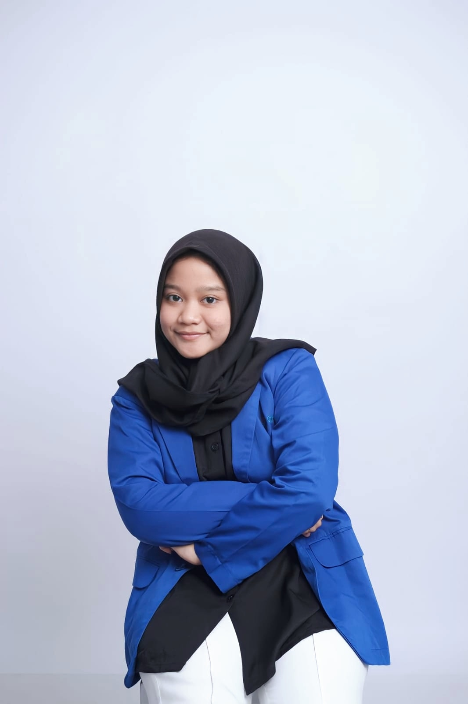

Hello! I'm Lasti Ayu Septina 🐈⬛
System Analyst | Data Management
IT Project Coordinator
I don't just write code; I design the blueprint. I specialize in gathering requirements, standardizing data, and leading cross-functional teams—ensuring every project executes seamlessly and aligns perfectly with strategic business goals.
